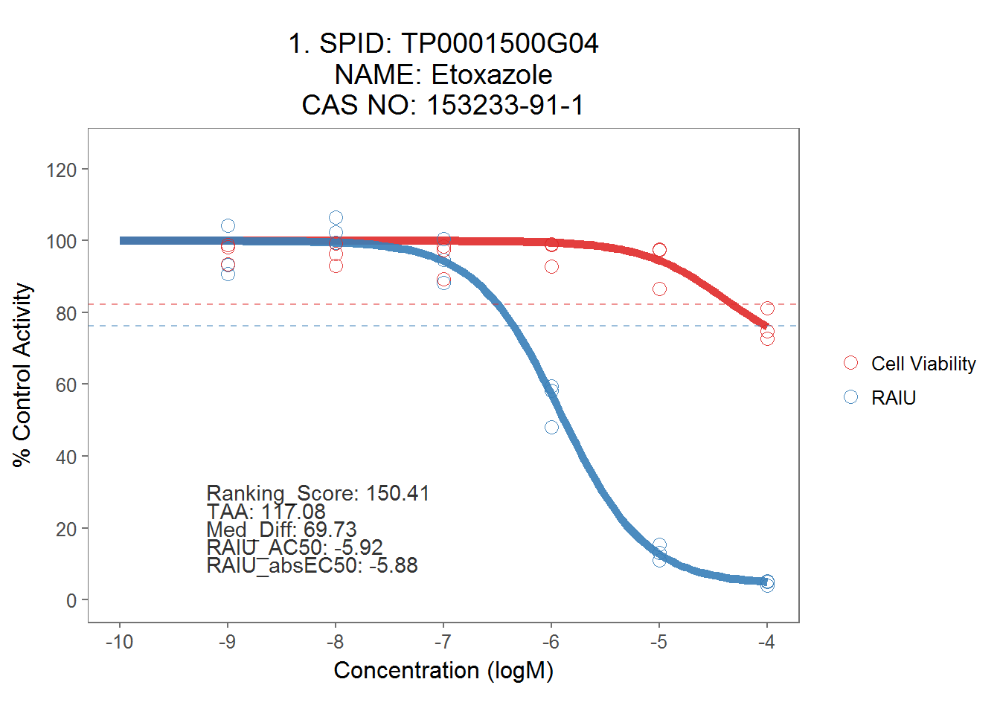

8 Export Dose-Response Curve
8.1 Make plots
#plot all
allplot <- toxplot::plot_tcpl(mc_model, sum_tbl, spid_chnm_table, notation = T)
# allplot[[1]] + scale_color_manual(values=c("#e02929", "#377eb8"),
# labels = c("Cell Viability", "RAIU"))
for (i in 1:length(allplot)) {
allplot[[i]] <- allplot[[i]] + scale_color_manual(values=c("#e02929", "#377eb8"),
labels = c("Cell Viability", "RAIU"))
}
allplot[[1]]
8.2 Export dose-response plots as PDF
# Export plots as pdf file
save_plot_pdf(allplot,"./output plots/ranked_dose_response_plots.pdf")
# export dataset for all the plots.
# left_join(filter(dt_mc_norm, wllt=="t"), spid_chnm_table, by="spid") %>% write_csv("./output figure's source data/supplemental_fig2_data.txt")8.3 Fig.1
Dose-response curves to demonstrate ranking score.
# Multiple plot function
# Credit: this function was obtained from http://www.cookbook-r.com/Graphs/Multiple_graphs_on_one_page_(ggplot2)
#
# ggplot objects can be passed in ..., or to plotlist (as a list of ggplot objects)
# - cols: Number of columns in layout
# - layout: A matrix specifying the layout. If present, 'cols' is ignored.
#
# If the layout is something like matrix(c(1,2,3,3), nrow=2, byrow=TRUE),
# then plot 1 will go in the upper left, 2 will go in the upper right, and
# 3 will go all the way across the bottom.
#
multiplot <- function(..., plotlist=NULL, file, cols=1, layout=NULL) {
library(grid)
# Make a list from the ... arguments and plotlist
plots <- c(list(...), plotlist)
numPlots = length(plots)
# If layout is NULL, then use 'cols' to determine layout
if (is.null(layout)) {
# Make the panel
# ncol: Number of columns of plots
# nrow: Number of rows needed, calculated from # of cols
layout <- matrix(seq(1, cols * ceiling(numPlots/cols)),
ncol = cols, nrow = ceiling(numPlots/cols))
}
if (numPlots==1) {
print(plots[[1]])
} else {
# Set up the page
grid.newpage()
pushViewport(viewport(layout = grid.layout(nrow(layout), ncol(layout))))
# Make each plot, in the correct location
for (i in 1:numPlots) {
# Get the i,j matrix positions of the regions that contain this subplot
matchidx <- as.data.frame(which(layout == i, arr.ind = TRUE))
print(plots[[i]], vp = viewport(layout.pos.row = matchidx$row,
layout.pos.col = matchidx$col))
}
}
}
## make Fig.1
perchlorate_plots_minimal <- plot_tcpl(perchlorate_md)
#png('./output plots/perchlorate_demo.png', units="px", width=450*8.33, height=300*8.33, res=600)
p1 <- perchlorate_plots_minimal[[19]]+
#ggtitle("NaClO4") +
ggtitle("A. NaClO4") +
coord_fixed(ylim = c(0, 125),
xlim = c(-9, -4),
ratio = 2 / 70 #used to be 2/70, when x axis was from -9 to -4.
) +
xlab("") +
ylab("") +
#theme(axis.title = element_blank()) +
theme(legend.position = "none")
#p1
#dev.off()
ap <- toxplot::plot_tcpl(mc_model, sum_tbl, spid_chnm_table)
#png('./output plots/taa_demo.png', units="px", width=450*8.33, height=300*8.33, res=600)
p2 <- ap[[2]] +
ggtitle("B") +
#ggtitle("Example 1") +
coord_fixed(ylim = c(0, 125),
xlim = c(-9, -4),
ratio = 2 / 70 #used to be 2/70, when x axis was from -9 to -4.
) +
xlab("") +
ylab("") +
theme(legend.position = "none")
# p2
# dev.off()
# png('./output plots/mid_taa_demo.png', units="px", width=450*8.33, height=300*8.33, res=600)
p3 <- ap[[21]] +
ggtitle("C") +
#ggtitle("Example 2") +
coord_fixed(ylim = c(0, 125),
xlim = c(-9, -4),
ratio = 2 / 70 #used to be 2/70, when x axis was from -9 to -4.
) +
xlab("") +
ylab("") +
theme(legend.position = "none")
# p3
# dev.off()
# png('./output plots/low_taa_demo.png', units="px", width=450*8.33, height=300*8.33, res=600)
p4 <- ap[[118]] +
ggtitle("D") +
coord_fixed(ylim = c(0, 125),
xlim = c(-9, -4),
ratio = 2 / 70 #used to be 2/70, when x axis was from -9 to -4.
) +
xlab("") +
ylab("") +
theme(legend.position = "none")
# p4
# dev.off()
# grid.arrange(p1,p2,p3,p4, ncol=2)
# fig1 <- arrangeGrob(p1,p2,p3, ncol = 1)
# ggsave("./output plots/fig1_new.png", fig1, dpi=900, width=9, height = 6.5 )
#ggsave("./output plots/legend.png", ap[[116]], dpi=900)
#export data for figure 1
# fig1a <- perchlorate_plots_minimal[[19]]$data %>% mutate(subfigure = "A")
# fig1b <- ap[[2]]$data %>% mutate(subfigure = "B")
# fig1c <- ap[[21]]$data %>% mutate(subfigure = "C")
# fig1d <- ap[[118]]$data %>% mutate(subfigure = "D")
# fig1_data <- bind_rows(fig1a, fig1b, fig1c, fig1d) %>%
# select(subfigure,assay, spid, conc, resp) %>%
# write_csv("./output figure's source data/Fig.1.data.csv")8.4 Fig. 3
# Top 15 samples graphs group
ap_mini <- toxplot::plot_tcpl_minimal(mc_model, sum_tbl, spid_chnm_table, notation = T)
tiff('./output plots/top15v6.tiff', units="px", width=750*12.5, height=1000*12.5, res=900, compression = "lzw")
multiplot(ap_mini[[1]],ap_mini[[2]],ap_mini[[3]],
ap_mini[[4]],ap_mini[[5]],ap_mini[[6]],
ap_mini[[7]],ap_mini[[8]],ap_mini[[9]],
ap_mini[[10]],ap_mini[[11]],ap_mini[[12]],
ap_mini[[13]],ap_mini[[14]],ap_mini[[15]],
layout = matrix(c(1,2,3,4,5,6,7,8,9,10,11,12,13,14,15), nrow=5, byrow=TRUE))
dev.off()
#
# three graphs for ETC disruption
tiff('./output plots/3_ETC_Disruption.tiff', units="px", width=750*12.5, height=200*12.5, res=900, compression = "lzw")
multiplot(ap_mini[[17]],ap_mini[[58]], ap_mini[[42]], layout = matrix(c(1,2,3), nrow=1, byrow=TRUE))
dev.off()
# # three graphs for no ranking scores
# tiff('./output plots/no_score_update.tiff', units="px", width=750*12.5, height=200*12.5, res=900, compression = "lzw")
# multiplot(ap_mini[[146]],ap_mini[[151]], ap_mini[[144]], layout = matrix(c(1,2,3), nrow=1, byrow=TRUE))
# dev.off()
# export fig.3. data
# selected <- c(1,2,3,4,5,6,7,8,9,10,11,12,13,14,15,146,151,144)
# fig5_chem <- sum_tbl %>%
# mutate(rownames = rownames(sum_tbl)) %>%
# filter(rownames %in% selected) %>%
# dplyr::select(spid, chnm)
#
# fig5_dt <- dt_mc_norm %>%
# filter(spid %in% fig5_chem$spid) %>%
# select(spid, assay, conc, nval_median)
# left_join(fig5_dt, fig5_chem, by="spid") %>%
# select(chnm, everything()) %>%
# write_csv("./output figure's source data/Fig.5.data-1.csv")
# sum_tbl %>%
# filter(spid %in% fig5_chem$spid) %>%
# dplyr::select(spid, chnm, AC50_prim, absEC50_prim, ranking_score) %>%
# write_csv("./output figure's source data/Fig.5.data-2.csv")